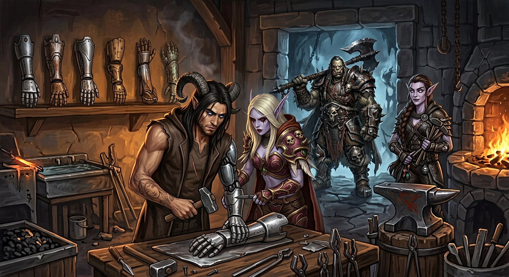
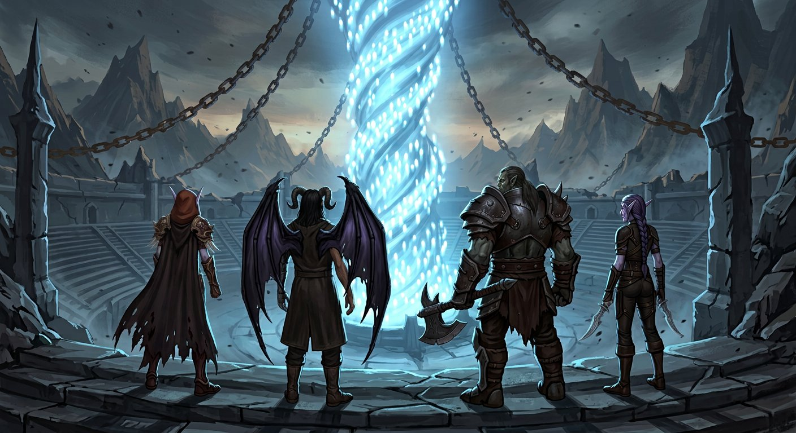

Galeria
Clique em qualquer imagem para ampliar.

Sylvanas WindrunnerFrontispício — a penitência na Gorja · ler cena

O que voltou da GorjaCapítulo Oito — o reencontro · ler cena

A tenda e a lamparinaCapítulo Dezesseis · ler cena

A forja e as sete prótesesCapítulo Dezessete · ler cena

VarokhRetrato — o centro da linha · ler cena

ElyraRetrato — a que fala · ler cena

O ColecionadorCapítulo Treze — diante da fenda · ler cena

O anfiteatroCapítulo Dezoito — quando a luz encontrou saída · ler cena

O penteCapítulo Dezenove — a lamparina e o cabelo solto · ler cena

A porta seladaCapítulo Vinte — trancada por fora, às pressas · ler cena